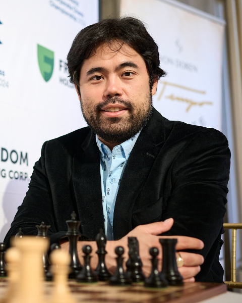
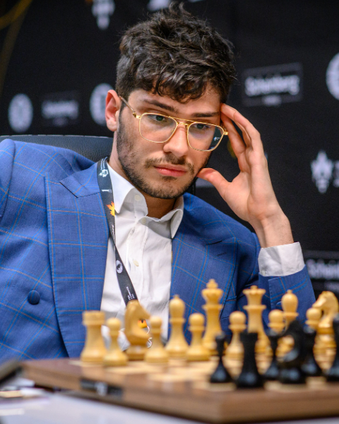

Famous Players
1. Magnus Carlsen: The Norwegian chess grandmaster, former World Chess Champion, and one of the highest rated players in history. He is very good at the endgame.
2. Hikaru Nakamura: He is very good at quick chess, he is a Japanese immigrant living in America.

3. Gukesh Dommaraju: The youngest chess grandmaster in history, he is an Indian player.
4. Alireza Firouzja: A young Iranian-French chess grandmaster, known for his aggressive style and rapid rise in the chess world.
